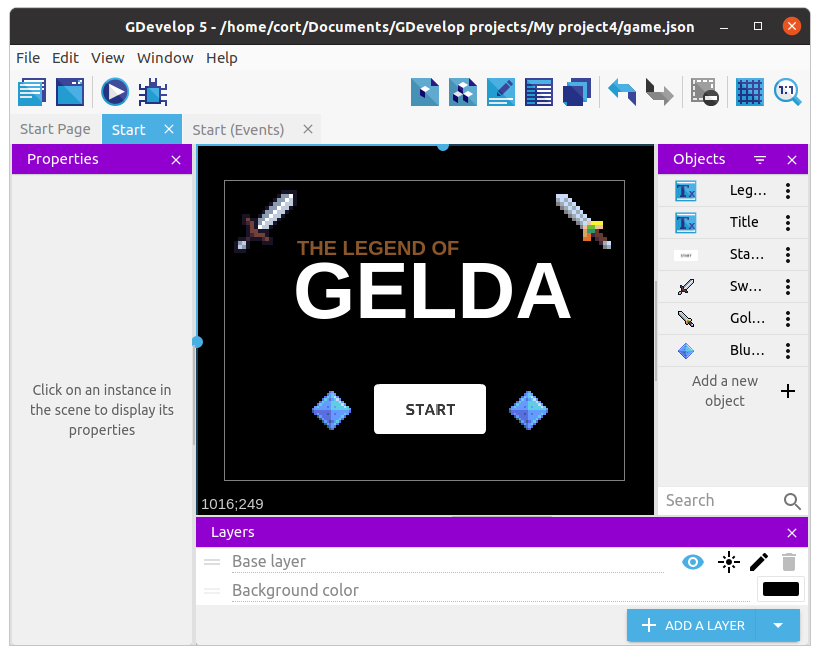
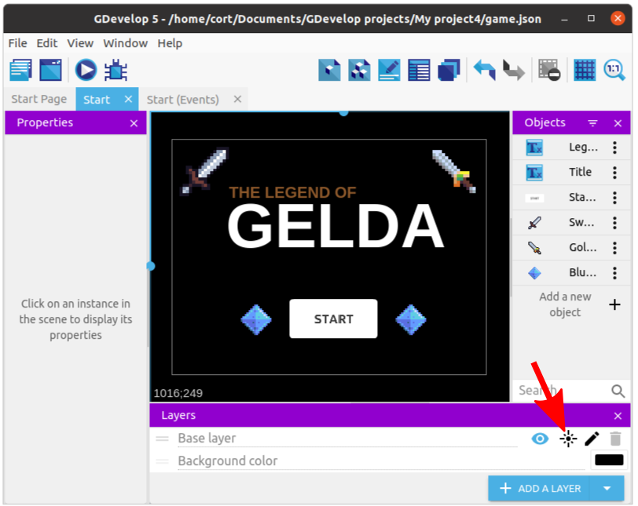
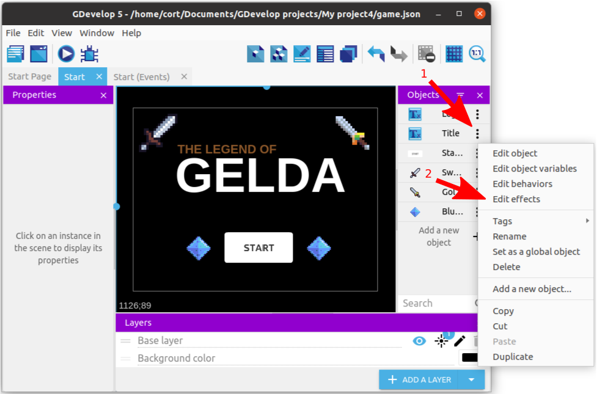
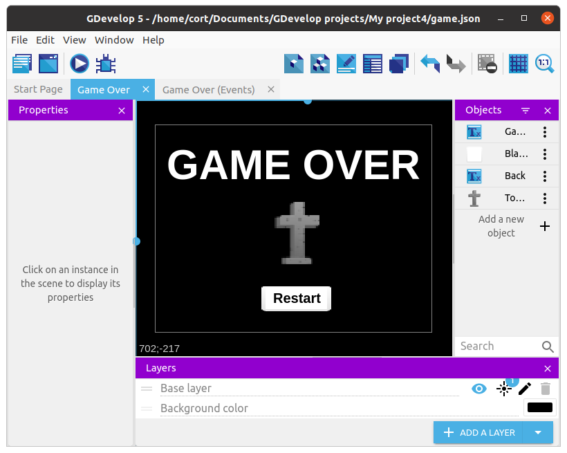
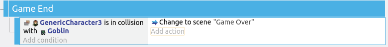

Start and End Scenes
It's hard to create a nice looking start and end scene without the use of custom graphics, so I'll just be creating a very simple one here. If you are using the desktop editor, you can create your own image in Photoshop / Gimp / Inkscape / etc, and import it into your game.
Add a new scene, rename it to Start and move it to the top of the scene list.
Add a new Text object, give it the initial text GELDA and set the color and font. Drag an instance on to the scene and position it suitably.
Add a start button to the scene. Size and position it suitably.
Optional: Add more text and images to decorate your start scene.
This is what mine looks like...

Effects
Effects changes appearances, such as changing the color into black and white, blurring the screen, or making an object glow. They can be applied to an object, or to an entire layer.
We'll apply the Godray effect on the Base Layer, and the Pixelate and Advanced Bloom effect on the title object.
Starting with Godray, click on the Layer effects button.

Click on Add Effects, and under Choose the effect to apply, select Godray. Experiment with the parameters if you like, then click Apply when you are done.
For the title object, click on the kebab menu then select Edit Effects.

First add the Advanced Bloom effect, then add the Pixelate effect. For the Pixelate effect, I find that using a size of 5 looks best, but feel free to play around with any of the settings.
This is what my start scene looks like with the above effects applied.

Start Scene Events
We'll add an event to make the start button work.
Add a new event, and set two conditions...
- Left mouse button released (...under Other conditions)
- Cursor / Touch is on StartButton
For the action, set it to Change scene to "Play" (...under Other actions).

End Scene
Add a new scene and rename it to Game Over.
Add a new Text object, give it the initial text GAME OVER and set the color and font. Drag an instance on to the scene and position it suitably.
Add a restart button to the scene. I'm using a white Blank Button and placing on top of it a Text object with the words "Restart".
Optional: Add more text, images, and effects to decorate your start scene.
This is what mine looks like...

End Scene Events
We'll add an event to make the restart button work.
Add a new event, and set two conditions...
- Left mouse button released (...under Other conditions)
- Cursor / Touch is on BlankButton
For the action, set it to Change scene to "Start" (...under Other actions).
Losing
We'll have the player lose if he touches a monster.
To do that, we'll add an even that detect if the player is colliding with a monster. If he is, we'll change the scene to the Game Over scene.
Switch back to the Play scene. Add a new group event and name it Game End.
Under Game End, add a sub-event, and set the condition to Player collision Goblin. For the action, select Other Actions, Change Scene, "Game Over".
